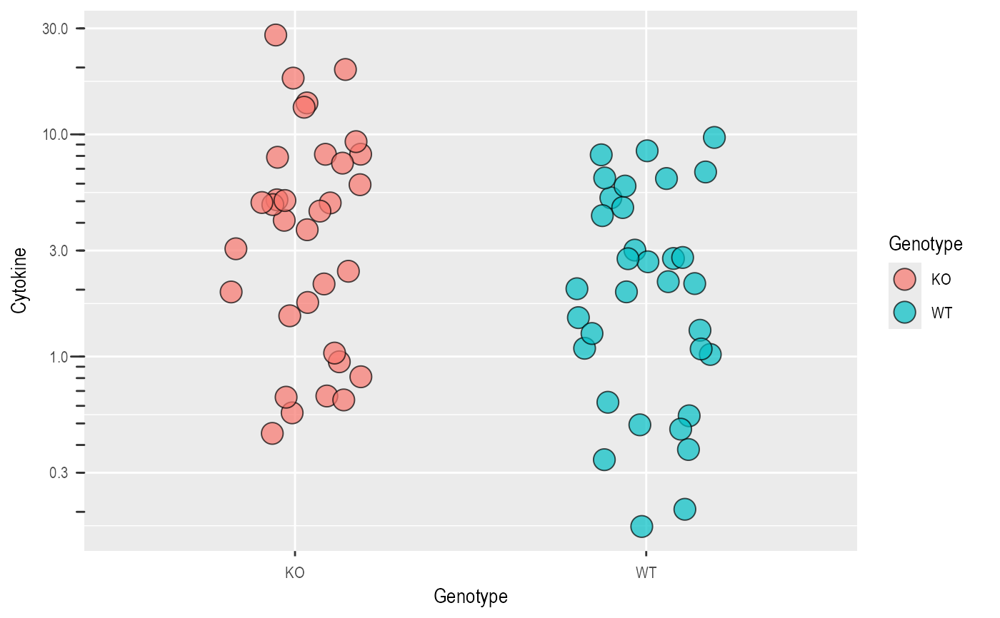
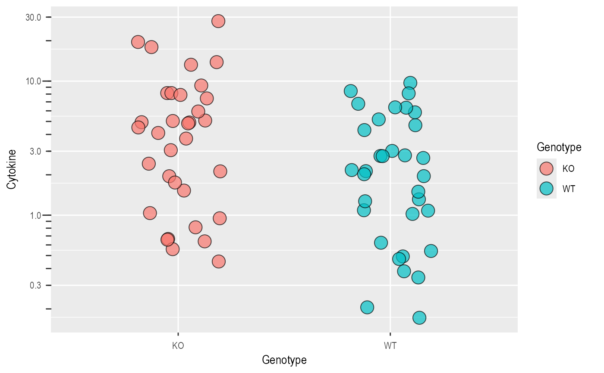

This function allows "log10" or "log2" transformation of X or Y axes. With "log10" transformation, log10 ticks are also added on the outside.
plot_logscale(
Plot,
LogYTrans = "log10",
LogXTrans,
LogYBreaks = waiver(),
LogXBreaks = waiver(),
LogYLimits = NULL,
LogXLimits = NULL,
LogYLabels = waiver(),
LogXLabels = waiver(),
fontsize = 22,
...
)a ggplot2 object.
transform Y axis into "log10" (default) or "log2"
transform X axis into "log10" or "log2"
argument for scale_y_continuous for Y axis breaks on log scales, default is waiver(), or provide a vector of desired breaks.
argument for scale_x_continuous for Y axis breaks on log scales, default is waiver(), or provide a vector of desired breaks.
a vector of length two specifying the range (minimum and maximum) of the Y axis.
a vector of length two specifying the range (minimum and maximum) of the X axis.
argument for scale_y_continuous for Y axis labels on log scales, default is waiver(), or provide a vector of desired labels.
argument for scale_x_continuous for Y axis labels on log scales, default is waiver(), or provide a vector of desired labels.
this parameter sets the linewidth of the log10 tickmarks (8*fontsize/22 for long ticks and 4*fontsize/22 for middle ticks). It is set to 20 as default to be consistent with rest of grafify. It will need to be changed to 12, which is the default fontsize for graphs produced natively with ggplot2.
any other arguments to pass to scale_y_continuous or scale_x_continuous
This function returns a ggplot2 object of class "gg" and "ggplot".
Arguments allow for axes limits, breaks and labels to passed on.
#save a ggplot object
P <- ggplot(data_t_pratio,
aes(Genotype,Cytokine))+
geom_jitter(shape = 21,
size = 5, width = .2,
aes(fill = Genotype),
alpha = .7)
#transform Y axis
plot_logscale(Plot = P)

#or in one go
plot_logscale(ggplot(data_t_pratio,
aes(Genotype,Cytokine))+
geom_jitter(shape = 21,
size = 5, width = .2,
aes(fill = Genotype),
alpha = .7))
